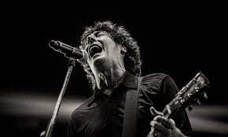

|  |
| Roberto Musso |
| ㅤ |
| Santiago Tavella |
| ㅤ |
| Álvaro Pintos |
| ㅤ |
 |
| Gustavo Antuña |
| ㅤ |
| Santiago Marrero |
| ㅤ |
| ㅤ |
| ㅤ |
| ㅤ |
| ㅤ |
Biografía del Cuarteto de Nos
El Cuarteto de Nos nace a mediados de los 80 y en los 90 se consolida como una de las bandas más significativas del rock uruguayo. Irreverentes, con humor negro, música de todos los estilos, desafiantes y con una actitiud punk llevada al humor y a la creación de personajes extraños de ficción. Editan en el 94 “Otra Navidad en las Trincheras” y se convierten en la banda más popular del rock uruguayo, trascendiendo a todo público y edades. A tal punto que al día de hoy sigue siendo el disco más vendido de la historia del rock nacional. Cuentan hasta la fecha con 16 trabajos discográficos, generando múltiples discos de Oro, Platino y Triple Platino.
En el 2006 la banda sorprende al mundo con "Raro", en lo que se denominó el “nuevo regreso” masivo de EL CUARTETO DE NOS a nivel rioplatense y con el cual sucede la definitiva internalización de la banda.
En el 2004 el Cuarteto comienza a trabajar junto al reconocido músico y productor Juan Campodónico (Drexler, Bajofondo, Supervielle, La Vela Puerca, NTVG, Campo, etc), con el que hicieron como primer paso el reversionar hits de sus pasados discos al cual llamaron “Cuarteto de Nos” o informalmente conocido como “Greatest hits”. Ese proceso se continuó con la realización de Raro, donde El Cuarteto logró darle a sus temas un tinte más rockero, destacando cada instrumento y sus grandiosas melodías, junto a sus desopilantes, inteligentes y filosas letras. Una banda única e inconfundible que de la mano de un gran productor como Campodónico, lograron un disco inmejorable.
Con sus siguientes discos, Bipolar, Porfiado, Habla tu espejo, Apocalipsis Zombi y Jueves generaron la consolidación internacional de la banda. Todos han sido nominados a los Premios Latin Grammy, como:
- "Mejor Disco".
- "Mejor Canción".
- "Mejor Video Clip".
Su principal distintivo son sus letras afiladas, el manejo de la ironía, la crudeza y la autocrítica del ser y el existencialismo, pasando también por los sentimientos más básicos como el amor, la conciencia del paso del tiempo, la vejez y otras emociones.
Las constantes giras anuales por Latinoamérica han llevado a que se convierta en una de las bandas latinas más admiradas y seguidas en América y España. Presentes en los principales festivales de cada país, con shows propios masivos en todas las capitales y en las distintas ciudades del interior de cada territorio, la banda se afianza en los oídos hispanoparlantes con millones de seguidores activos y fieles, que están atentos a cada movimiento que dan.
Un vínculo muy fuerte se ha establecido en países como Argentina, Colombia o México donde la banda ya es casi local, como sucede también en el resto de América. No se han quedado atrás en sorprender a los países centroamericanos, donde la gran cantidad de seguidores fue una gran novedad de los últimos años, como pasó también en cada gira por España y otros países de Europa.
Su último disco “Jueves” fue denominado como un monstruo de 4 cabezas, ya que fue producido por 4 diferentes productores: Eduardo Cabra, Héctor Castillo, Juan Campodónico y Camilo Lara, reflejando la eclecticidad estilística de la banda. La idea fue que cada canción estuviera dirigida por “un productor a medida”, lo que consagró a este disco como un conjunto de piezas únicas. Jueves es para el Cuarteto, y también ha sido así destacado por la prensa, como una especie de “Raro reloaded”, dada la contundencia de la obra y de sus canciones individualmente. Destacando joyas como “Contrapunto para humano y computadora” o la hilarante y crítica “Punta Cana”, entre otras.
En 2021 se dio a conocer el primer single “Fiesta en lo del Dr. Hermes” que forma parte de su reciente disco editado, en Julio 2022, denominado “Lámina once”. Junto con “La Ciudad sin alma” y “Maldito show”, la banda dio a conocer una muestra de por dónde venía su nuevo trabajo discográfico. Una obra de 8 canciones que está fuertemente marcada por una fuerte reflexión filosófica acerca de nuestra vida actual. Donde el arte del mismo, plasma de forma genial parte de esas preguntas, con 9 imágenes que simulan los famosos Test de Rorschach e invitan a abrir nuestros sentidos y profundizar en ¿qué vemos de todo lo que vemos?
Lámina Once contó con la producción de Eduardo Cabra (Visitante) y Héctor Castillo , dos amigos de la casa, con quienes la banda ya había trabajado en su antecesor, “JUEVES”. Grabado en pandemia entre Montevideo, Puerto Rico y Nueva York, este es el primer disco que sale por su sello propio PORFIADO RECORDS.